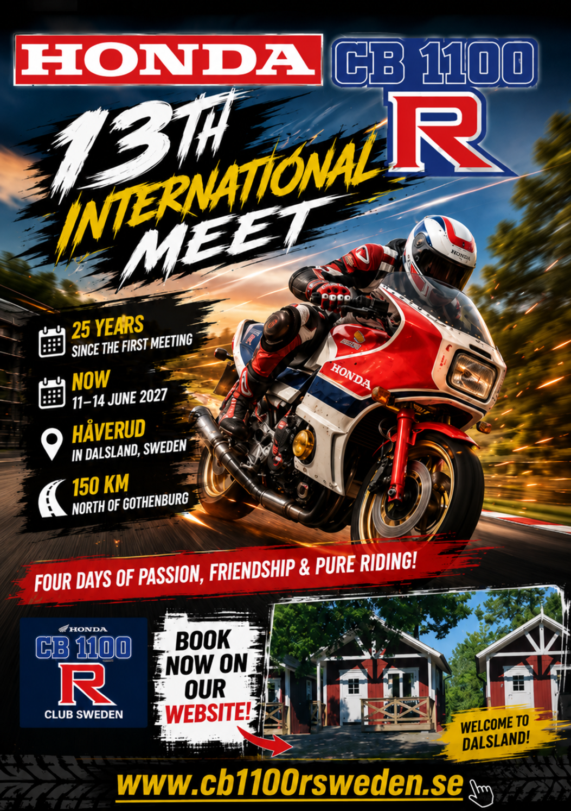

Join CB1100R enthusiasts from all over Europe for an unforgettable weekend filled with friendship, riding and passion.
A beautiful trip with nature, history, art and great food.
Meet location: The Visitor Stugby, Håverud Show on map →
Built in 1868. A unique place where road, railway and water meet.
Old industrial site, now a cultural centre.
Over 2,000 carvings from the Bronze Age.
Small charming village in scenic nature.
Red wooden church from the 18th century.
Around 280 plants (food, medicine, dyeing).
Forests, lakes and countryside.
Scenic cycling along lakes and canals.
Located right by the canal.
Locally produced fish delicacies.
Perfect summer stop.
Café and bistro in an old industrial setting.
Amazing lake view.
Dalsland offers a perfect combination of nature, history, culture and hospitality. Ride some of Sweden's most scenic roads, enjoy local food and cafés, and experience the peaceful atmosphere that makes visitors stay longer than they originally planned.
It's not just a place to visit – it's a place you'll want to stay longer than planned.